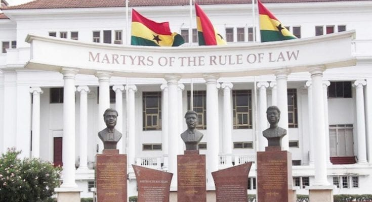

Balancing School and survival
The sad life of Ghanaian Youths

For many Ghanaian youths, school is a dream, but survival is the reality.
From selling water on the streets to helping at home, the hustle is real.
Balancing education with economic struggles isn’t easy. Late nights studying after work, skipped meals to save for textbooks—it’s a daily fight. But every small win matters: passing a test, saving for supplies, or just showing up.
To every young hustler chasing their dreams—keep going. Your hard work today is shaping a brighter tomorrow. Your hustle is valid. Your dreams are worth it..Ghana Can Do Better
Ghana is full of promise, but let’s be honest—we’re not where we should be. Unemployment is rising, education needs a boost, and opportunities for the youth feel out of reach. We deserve better. Our generation is smart, creative, and ready to lead. So why are we still stuck? Poor leadership, lack of vision, and broken systems are holding us back. Ghana can do better. With bold ideas, honest leadership, and opportunities for all, we can rise. It starts with us—speaking up, staying informed, and pushing for change. The future is ours, but we must fight for it. Ghana will do better—because we will make it better.